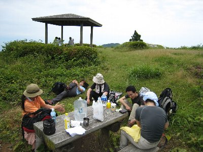
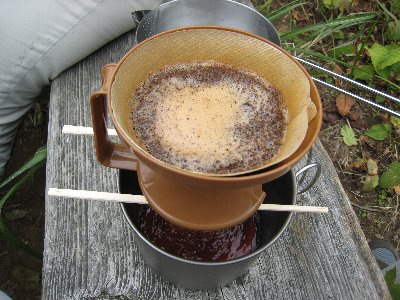
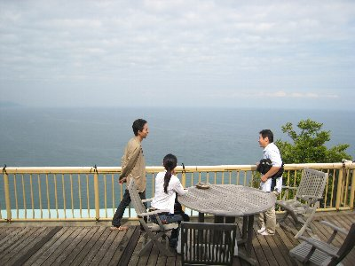

満観峰ふたたび（おにぎり部） | 2008年6月 幹事：kusa |
|---|---|
| 定着してきた、おにぎり部活動ですが、今回は昨年登った満観峰を別ルートで攻めてみることにしました。 参加者は6名。回を重ねるごとに人数が増えていくのは、うれしい限りです。 ルートは、焼津の花沢の里から日本坂峠経由の満観峰です。時間的には前回より短いのかな？帰りは高草山方面経由で花沢の里です。 まず、花沢の里は、古い東海道の町並みが残った情緒あふれる集落で、黒い下見板や石垣、小川のせせらぎなどがとても気持ちの良い所です。ここだけ時間が止まっているのではないかと思われる空間ですね。 軒先の無人販売を横目でチラチラ眺め、まるでジャングルに突入するかのごとくハイキング道にわけ入ります。 | |
 花沢の里 良い感じです |  ホント、ジャングルみたい入り口でした！ |
| 暑い！ 6月だと言うのに、いや6月だからか蒸し暑く、登り始めてすぐに汗をかき、最近の運動不足も相まって早々に疲れてきました。小休止で水分を補給しながら、うっそうとした山を登ります。 日本坂峠を過ぎた辺りから、野イチゴや蛇イチゴがちょっとづつ顔をだし、味見程度に野イチゴをつまみながら、ゆっくりとゆっくりと階段状の坂を進みます。 山頂に近づくとお茶畑が広がり、若々しい緑が気持ちを和やかにさせてくれます。 前回、倒木のため通れ無かったルートも、倒木をそこだけ切って通れるようになっており、お茶畑を横切らなくても良くなっていました。 | |
 野イチゴ この後、私が食べました。 |  もうすぐ山頂です(^^ゞ |
| やっと満観峰山頂です。あいにくの曇り空ですが、静岡市街や駿河湾を望むことが出来ました。良い気分です。 そして最大の目的、お昼です♪ おにぎり部の由来は、おにぎりを美味しく食べるために（ちょこっと）歩く！ですから。 やっぱり運動した後のおにぎりは美味しいな〜 例え、先週準備して食べる機会が無く冷凍保存されていた解凍おにぎりでも。 登り降りの時間より休憩時間が多いのも、おにぎり部特有ですから、山頂でものんびりお休み。定番になっているコーヒー集会を、ここでも実行。ちゃんとフィルターで淹れるやつです。いづみさんありがとうございます。 さてさて、長い休憩とお昼寝（まあ、私だけですが）で、山頂から他のハイカーを見かけなくなった2時頃に、重い腰を上げて下山しました。 今回はお風呂も浸かって行こうと、焼津の簡保の宿で展望の湯に入り、焼津で美味しい夕食を食して解散です。 あー、楽しかった♪ | |
|  山頂でお昼。ソコがおにぎり部！ |  そしてコーヒー集会♪ |
| 追伸 上記でも若干触れていますが、満観峰企画は本当は一週間前の予定でしたが、当日は雨。せっかくの日曜と言うことも有り、有志で集まってボーリングなどをいたしました。その模様をちょこっとお届け。 私は久しぶりのボーリング。多分、他の参加者もほとんどそうでしょう。久しぶりのゲームに手が疲れ1ゲーム目は119点。 ２ゲーム目は疲れた手が無理な力を入れなくしたか、私としては高スコアの171点！ いやいや、本人もびっくり。 お昼は用宗で中華料理を堪能。皆で色々つつけて美味しかった！ その後は、大崩の夢宝庵でコーヒータイム。静岡の人は知ってるかな。大崩はがけになっているから、そのがけの上に立っているお店なんだよね。だから、とっても景色が良いんです！ え、雨でハイキング中止じゃなかったのって？ 実は・・・・雨は午前中で上がり、午後はいい天気になっちゃったんです！ なんか悔しい〜〜 でも、夢宝庵から一望できる駿河湾は絶景ですね。青い海が視界一面に広がり最高に気持ちが良いです。 雨で中止になった企画のお陰の企画ですが、ちょっと儲けた気がしました。 | |
 雨の日のボーリング |  夢宝庵のテラスから駿河湾を |
| 写真＆コメント ｂｙ べっしー | |